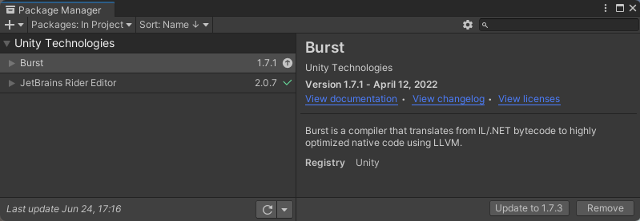
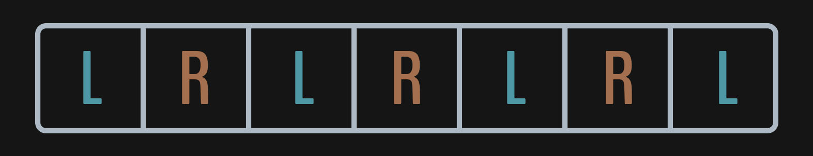

(Part 1) Runtime Audio Generation in the Unity Engine - Creating Simple Sounds
Table of Contents
- 🔗 Introduction
- 🔗 (Part 0) Fundamentals
- 🟢 (Part 1) Creating Simple Sounds
- 🔗 (Part 2) Performance and Architecture
Creating Simple Sounds
In this post we will cover getting a project set up and start laying down the groundwork for generating sound in the Unity Engine. The previous post covered a basic understanding of what digital sound is, and also provided some insight into the vocabulary we will be referencing. If you have never dealt with digital sound manipulation before, it may be worth your time to go back and take a look.
Project Setup
Create a new Unity project. The editor used in this post is version 2020.3.19f1. I will be calling this project Synthic because I thought the name sounded cool. (I will also be using the ‘synth’ verbiage in a lot of my classes too)
Unity comes with a BUNCH of preinstalled packages in the package manager. For the sake of keeping things clean, we will remove pretty much all of them, and only add ones we know we will need right now.

One big thing that we need to install is the Unity Burst Compiler. The burst compiler is some voodoo magic that takes standard C# IL/.NET bytecode and compiles it down to REALLY fast native code. We will be using this heavily to generate sounds because performance is critical when generating sounds at runtime.
The only other package I have is one for my specific IDE, which happens to be JetBrains Rider. You dont need to use this IDE, but it’s my IDE of choice.
With our editor up and running, lets start hooking into the sound engine.
Hooking into the sound engine
Unity’s MonoBehaviour allows for a method called OnAudioFilterRead. This is usually used to process incoming audio, but nothing is stopping us from creating audio in the first place. The only requirement is that we have an empty AudioSource component on our game object as well.
public class AudioGenerator : MonoBehaviour
{
private void OnAudioFilterRead(float[] data, int channels)
{
// sound generation logic goes here
}
}
The float array is what we call an audio buffer. This contains the samples for the next section of audio playing in Unity’s sound engine. This should currently be set to have 2048 samples. This is because, by default, unity’s buffer length is 1024, and there are 2 audio channels (one for left and right).
The order of the data when in 2 channel mode is an interleaving of the samples as a left right repeating pattern (other modes follow a similar paradigm just with more channels):

Now that we have an entry point into the sound engine, and understand the data layout, let’s build a simple synth to get us started.
Creating your first Synth
First we need to make a new script. I’m calling mine SimpleSineGenerator as we will be generating a single sine wave with it. For this first generator, we are not going to set up an architecture yet, or worry about performance. This will simply be an introduction into how a generator may be constructed.
There are a few parameters we could expose in the inspector. We will use frequency and amplitude for this example. Here is what our class should look like right now:
public class SimpleSineGenerator : MonoBehaviour
{
[SerializeField, Range(0, 1)] private float amplitude = 0.5f;
[SerializeField] private float frequency = 261.62f; // middle C
private void OnAudioFilterRead(float[] data, int channels)
{
// TODO: Generate Sine Wave
}
}
As we generate audio, we will need to keep track of where in the wave we currently are. To do this, let’s create a private double to track of the current phase1 of our wave.
We also need to keep track of the current Sampling Rate. We will grab this in the Awake method and, for now, just assume it doesn’t change.
Add these variables to the class where you like:
private double _phase;
private int _sampleRate;
Now lets get to the meat of the generation. We will start calculating how much the phase should change after each sample iteration. Then we will proceed to loop over each sample in the buffer to calculate its wave value.
private void OnAudioFilterRead(float[] data, int channels)
{
// calculate how much the phase should change after each sample
double phaseIncrement = frequency / _sampleRate;
for (int sample = 0; sample < data.Length; sample += channels)
{
// TODO: operate on samples
}
}
While looping over the samples we need to do the following:
- calculate the value for the current phase of the sine wave
- increment the phase value for the next iteration
- populate all the audio channels with the current wave value
Here is the logic I added to my loop:
for (int sample = 0; sample < data.Length; sample += channels)
{
// get value of phase on a sine wave
float value = Mathf.Sin((float) _phase * 2 * Mathf.PI) * amplitude;
// increment _phase value for next iteration
_phase = (_phase + phaseIncrement) % 1;
// populate all channels with the values
for (int channel = 0; channel < channels; channel++)
{
data[sample + channel] = value;
}
}
With all that completed, make sure you apply this component with an empty audio source onto a game object, and hit play!
You should hear a middle C sine wave! (assuming you haven’t changed the frequency)
It should sound like this:
Next Section → Performance and Architecture
-
Phase is the current position within one cycle of a wave. See Wikipedia Definition
For simplicity we use a value between 0 and 1, but this is also commonly between 0 and 2π. ↩